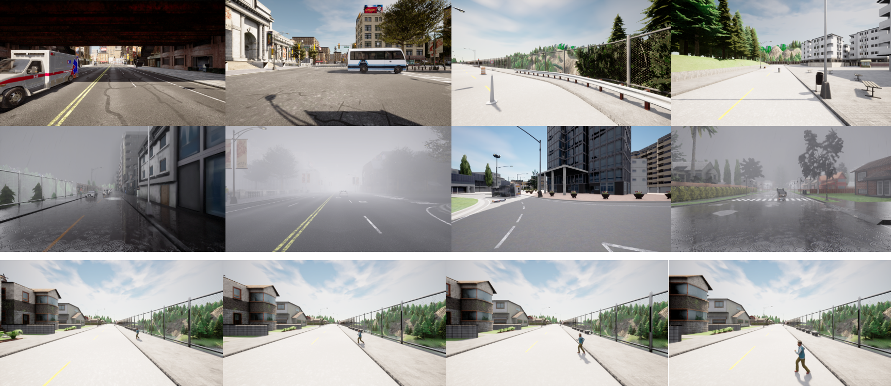

About
Nowadays, closed-set perception methods for autonomous driving perform well under datasets containing normal scenes with fixed semantic categories. However, they still struggle to handle anomalies in the real world, such as unknown objects or weather conditions that have never been seen while training. The lack of public datasets to evaluate the model performance on anomaly and corner cases has hindered the development of reliable autonomous driving systems.
Therefore, we present a multimodal Synthetic Dataset for Anomaly and Corner case detection called SDAC, which encompasses both anomaly frames and sequences captured from multi-view cameras and the LiDAR sensor, providing a rich set of annotations for multiple mainstream perception tasks.
SDAC is the first public dataset for autonomous driving that categorizes anomalies into object, scene, and scenario levels, allowing the evaluation under different anomalous conditions.
So far, the Lidar-based and scenario-level anomaly detection approaches are still struggling to gain momentum because of the absence of datasets. We anticipate that our SDAC dataset could foster the development of safe and reliable perception methods for autonomous driving.
If you have any questions about SDAC, please contact gleisa19@mail.ustc.edu.cn.
Examples
The object level, scene level and scenario level anomalies
